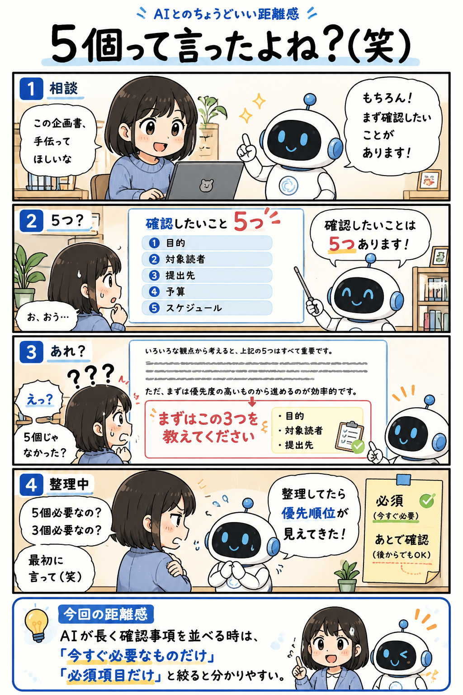

#039
5個って言ったよね？（笑）
AIの中では、整理が進んでいた。

メモ
AIの文章を読んでいると、途中で挙げた条件と最後の結論が少し変わって見えることがあります。
これは必ずしも矛盾ではなく、説明しながら整理した結果、優先順位が見えてきた状態かもしれません。
確認事項が多くて迷う時は、「今すぐ必要なものだけ」「必須項目だけ教えて」と頼むと、やり取りが分かりやすくなります。
今回の距離感
AIが長く確認事項を並べる時は、「今すぐ必要なものだけ」「必須項目だけ」と絞ると分かりやすい。